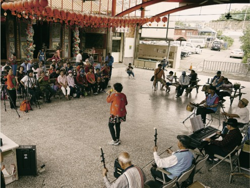

DIGITAL CULTURAL PRESERVATION
再見大崎。後會有期
IT ESG 廠處志工進行數位文化保存專案，數十位 IT 廠處志工參與，於 2024 年底完成拍攝，2025 年開始進行 3D 建模與列印課程。透過影像、地圖、文史資料與 3D 模型，為大崎聚落留下可被再次觀看、理解與延續的記憶。
進入大崎
從聚落簡介、老地名、產業與人口變化，到紀錄片與 3D 建模成果，讓讀者依照自己的興趣進入不同頁面。

DIGITAL CULTURAL PRESERVATION
IT ESG 廠處志工進行數位文化保存專案，數十位 IT 廠處志工參與，於 2024 年底完成拍攝，2025 年開始進行 3D 建模與列印課程。透過影像、地圖、文史資料與 3D 模型，為大崎聚落留下可被再次觀看、理解與延續的記憶。
從聚落簡介、老地名、產業與人口變化，到紀錄片與 3D 建模成果，讓讀者依照自己的興趣進入不同頁面。